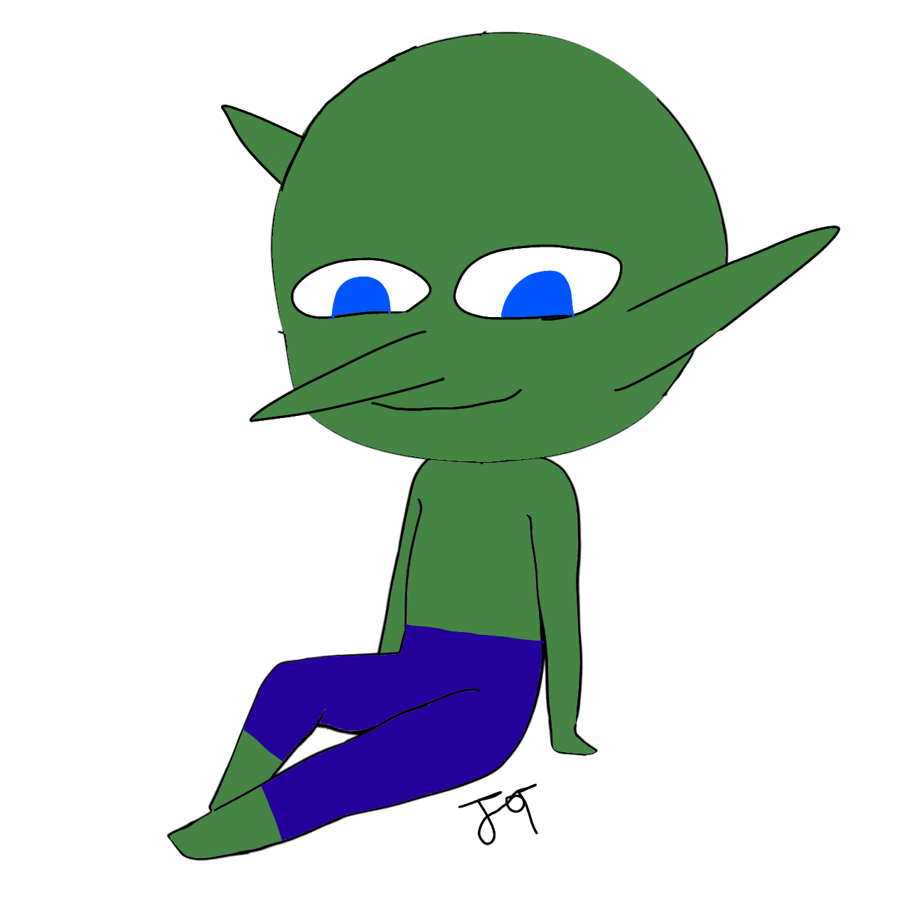
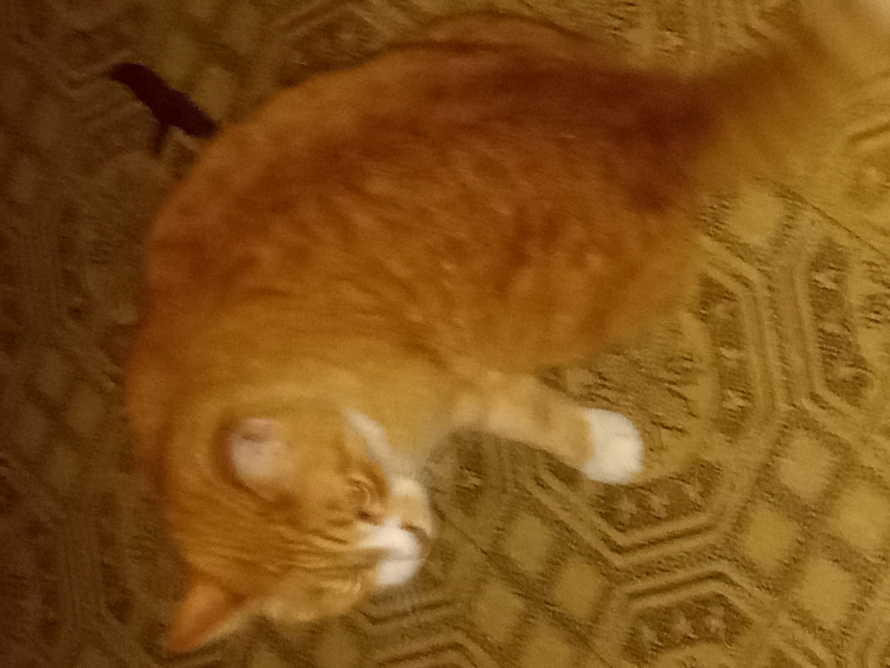
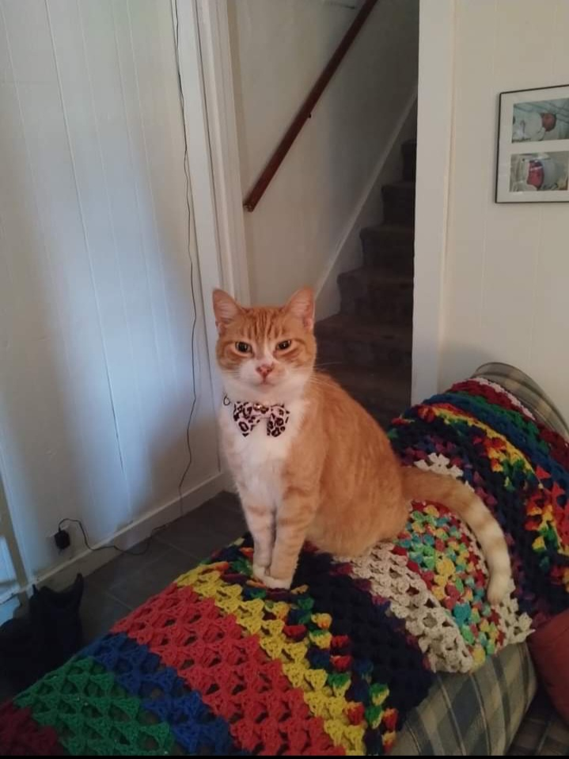

Hi my name I Joel T. Dinovo but most people call me JT. I am going to tell you all about me and my silly antics. In is web page I will talk about my favorite foods, what music artists I like, some of my hobbies, and some fun facts about me.
As I have siad already I am Joel T. Dinovo but most call me JT. I am the 3rd Joel in a row but there is no Jrs or Seniors because we each have different Middle names that set us apart. My Middle name is Thomas, my dad's is Howard, and my grandfather's is Dominic. I am a a very stubborn person and refuses to give up. I am a a very hard worker.
I am extremely good at any form of math. I am a quick learner. I work well with computers and any other electronics. I am very innovative and good at coming up with random ideas.
My main inspiration are my dad as he has always pickednup random things and learned how to do it and because of him I want to try and get into as many things I can. Mark Rober has been my inspiration to follow science of all kinds and to always be creative. I am also just inspired in general by humanity as a whole as when we are determined to do something we do everything we can to accomplish it no matter what.
I have a large interest in the gaming world. Some of my favorite games are the Borderlands games, Minecraft, Persona 5 Royal, and so many more. I also love cats. I also like drawing every once in a while and I have mand an OC named Francis. I alos love working with technology. I like to make people smile.
  
One of my goals is to get into the cybersecurity feild of work as I find it an interesting and cool. Another one of my goals is to be a silly guy who makes people happy.